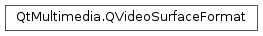

QVideoSurfaceFormat¶
Synopsis¶
Functions¶
- def
__eq__(format) - def
__ne__(format) - def
frameHeight() - def
frameRate() - def
frameSize() - def
frameWidth() - def
handleType() - def
isMirrored() - def
isValid() - def
pixelAspectRatio() - def
pixelFormat() - def
property(name) - def
propertyNames() - def
scanLineDirection() - def
setFrameRate(rate) - def
setFrameSize(size) - def
setFrameSize(width, height) - def
setMirrored(mirrored) - def
setPixelAspectRatio(ratio) - def
setPixelAspectRatio(width, height) - def
setProperty(name, value) - def
setScanLineDirection(direction) - def
setViewport(viewport) - def
setYCbCrColorSpace(colorSpace) - def
sizeHint() - def
viewport() - def
yCbCrColorSpace()
Detailed Description¶
The
PySide2.QtMultimedia.QVideoSurfaceFormatclass specifies the stream format of a video presentation surface.A video surface presents a stream of video frames. The surface’s format describes the type of the frames and determines how they should be presented.
The core properties of a video stream required to setup a video surface are the pixel format given by
PySide2.QtMultimedia.QVideoSurfaceFormat.pixelFormat(), and the frame dimensions given byPySide2.QtMultimedia.QVideoSurfaceFormat.frameSize().If the surface is to present frames using a frame’s handle a surface format will also include a handle type which is given by the
PySide2.QtMultimedia.QVideoSurfaceFormat.handleType()function.The region of a frame that is actually displayed on a video surface is given by the
PySide2.QtMultimedia.QVideoSurfaceFormat.viewport(). A stream may have a viewport less than the entire region of a frame to allow for videos smaller than the nearest optimal size of a video frame. For example the width of a frame may be extended so that the start of each scan line is eight byte aligned.Other common properties are the
PySide2.QtMultimedia.QVideoSurfaceFormat.pixelAspectRatio(),PySide2.QtMultimedia.QVideoSurfaceFormat.scanLineDirection(), andPySide2.QtMultimedia.QVideoSurfaceFormat.frameRate(). Additionally a stream may have some additional type specific properties which are listed by the dynamicPropertyNames() function and can be accessed using thePySide2.QtMultimedia.QVideoSurfaceFormat.property(), andPySide2.QtMultimedia.QVideoSurfaceFormat.setProperty()functions.
-
class
PySide2.QtMultimedia.QVideoSurfaceFormat¶ -
class
PySide2.QtMultimedia.QVideoSurfaceFormat(size, pixelFormat[, handleType=QAbstractVideoBuffer.NoHandle]) -
class
PySide2.QtMultimedia.QVideoSurfaceFormat(format) Parameters: - size –
PySide2.QtCore.QSize - format –
PySide2.QtMultimedia.QVideoSurfaceFormat - pixelFormat –
PySide2.QtMultimedia.QVideoFrame.PixelFormat - handleType –
PySide2.QtMultimedia.QAbstractVideoBuffer.HandleType
Constructs a null video stream format.
Contructs a description of stream which receives stream of
typebuffers with given framesizeand pixelformat.Constructs a copy of
other.- size –
-
PySide2.QtMultimedia.QVideoSurfaceFormat.Direction¶ Enumerates the layout direction of video scan lines.
Constant Description QVideoSurfaceFormat.TopToBottom Scan lines are arranged from the top of the frame to the bottom. QVideoSurfaceFormat.BottomToTop Scan lines are arranged from the bottom of the frame to the top.
-
PySide2.QtMultimedia.QVideoSurfaceFormat.YCbCrColorSpace¶ Enumerates the Y’CbCr color space of video frames.
Constant Description QVideoSurfaceFormat.YCbCr_Undefined No color space is specified. QVideoSurfaceFormat.YCbCr_BT601 A Y’CbCr color space defined by ITU-R recommendation BT.601 with Y value range from 16 to 235, and Cb/Cr range from 16 to 240. Used in standard definition video. QVideoSurfaceFormat.YCbCr_BT709 A Y’CbCr color space defined by ITU-R BT.709 with the same values range as . Used for HDTV. QVideoSurfaceFormat.YCbCr_xvYCC601 The BT.601 color space with the value range extended to 0 to 255. It is backward compatibile with BT.601 and uses values outside BT.601 range to represent a wider range of colors. QVideoSurfaceFormat.YCbCr_xvYCC709 The BT.709 color space with the value range extended to 0 to 255. QVideoSurfaceFormat.YCbCr_JPEG The full range Y’CbCr color space used in JPEG files.
-
PySide2.QtMultimedia.QVideoSurfaceFormat.frameHeight()¶ Return type: PySide2.QtCore.intReturns the height of frame in a video stream.
-
PySide2.QtMultimedia.QVideoSurfaceFormat.frameRate()¶ Return type: PySide2.QtCore.qrealReturns the frame rate of a video stream in frames per second.
-
PySide2.QtMultimedia.QVideoSurfaceFormat.frameSize()¶ Return type: PySide2.QtCore.QSizeReturns the dimensions of frames in a video stream.
-
PySide2.QtMultimedia.QVideoSurfaceFormat.frameWidth()¶ Return type: PySide2.QtCore.intReturns the width of frames in a video stream.
-
PySide2.QtMultimedia.QVideoSurfaceFormat.handleType()¶ Return type: PySide2.QtMultimedia.QAbstractVideoBuffer.HandleTypeReturns the type of handle the surface uses to present the frame data.
If the handle type is
QAbstractVideoBuffer::NoHandle, buffers with any handle type are valid provided they can bemappedwith theQAbstractVideoBuffer.ReadOnlyflag. If the is notQAbstractVideoBuffer.NoHandlethen the handle type of the buffer must be the same as that of the surface format.
-
PySide2.QtMultimedia.QVideoSurfaceFormat.isMirrored()¶ Return type: PySide2.QtCore.boolReturns
trueif the surface is mirrored around its vertical axis. This is typically needed for video frames coming from a front camera of a mobile device.Note
The mirroring here differs from
QImage.mirrored, as a vertically mirroredPySide2.QtGui.QImagewill be mirrored around its x-axis.
-
PySide2.QtMultimedia.QVideoSurfaceFormat.isValid()¶ Return type: PySide2.QtCore.boolIdentifies if a video surface format has a valid pixel format and frame size.
Returns true if the format is valid, and false otherwise.
-
PySide2.QtMultimedia.QVideoSurfaceFormat.__ne__(format)¶ Parameters: format – PySide2.QtMultimedia.QVideoSurfaceFormatReturn type: PySide2.QtCore.boolReturns true if
otheris different to this video format, and false if they are the same.
-
PySide2.QtMultimedia.QVideoSurfaceFormat.__eq__(format)¶ Parameters: format – PySide2.QtMultimedia.QVideoSurfaceFormatReturn type: PySide2.QtCore.boolReturns true if
otheris the same as this video format, and false if they are different.
-
PySide2.QtMultimedia.QVideoSurfaceFormat.pixelAspectRatio()¶ Return type: PySide2.QtCore.QSizeReturns a video stream’s pixel aspect ratio.
-
PySide2.QtMultimedia.QVideoSurfaceFormat.pixelFormat()¶ Return type: PySide2.QtMultimedia.QVideoFrame.PixelFormatReturns the pixel format of frames in a video stream.
-
PySide2.QtMultimedia.QVideoSurfaceFormat.property(name)¶ Parameters: name – str Return type: object Returns the value of the video format’s
nameproperty.
-
PySide2.QtMultimedia.QVideoSurfaceFormat.propertyNames()¶ Return type: Returns a list of video format dynamic property names.
-
PySide2.QtMultimedia.QVideoSurfaceFormat.scanLineDirection()¶ Return type: PySide2.QtMultimedia.QVideoSurfaceFormat.DirectionReturns the direction of scan lines.
-
PySide2.QtMultimedia.QVideoSurfaceFormat.setFrameRate(rate)¶ Parameters: rate – PySide2.QtCore.qrealSets the frame
rateof a video stream in frames per second.
-
PySide2.QtMultimedia.QVideoSurfaceFormat.setFrameSize(width, height)¶ Parameters: - width –
PySide2.QtCore.int - height –
PySide2.QtCore.int
This is an overloaded function.
Sets the
widthandheightof frames in a video stream.This will reset the
PySide2.QtMultimedia.QVideoSurfaceFormat.viewport()to fill the entire frame.- width –
-
PySide2.QtMultimedia.QVideoSurfaceFormat.setFrameSize(size) Parameters: size – PySide2.QtCore.QSizeSets the size of frames in a video stream to
size.This will reset the
PySide2.QtMultimedia.QVideoSurfaceFormat.viewport()to fill the entire frame.
-
PySide2.QtMultimedia.QVideoSurfaceFormat.setMirrored(mirrored)¶ Parameters: mirrored – PySide2.QtCore.boolSets if the surface is
mirroredaround its vertical axis. This is typically needed for video frames coming from a front camera of a mobile device. Default value is false.Note
The mirroring here differs from
QImage.mirrored, as a vertically mirroredPySide2.QtGui.QImagewill be mirrored around its x-axis.
-
PySide2.QtMultimedia.QVideoSurfaceFormat.setPixelAspectRatio(width, height)¶ Parameters: - width –
PySide2.QtCore.int - height –
PySide2.QtCore.int
This is an overloaded function.
Sets the
horizontalandverticalelements of a video stream’s pixel aspect ratio.- width –
-
PySide2.QtMultimedia.QVideoSurfaceFormat.setPixelAspectRatio(ratio) Parameters: ratio – PySide2.QtCore.QSizeSets a video stream’s pixel aspect
ratio.
-
PySide2.QtMultimedia.QVideoSurfaceFormat.setProperty(name, value)¶ Parameters: - name – str
- value – object
Sets the video format’s
nameproperty tovalue.Trying to set a read only property will be ignored.
-
PySide2.QtMultimedia.QVideoSurfaceFormat.setScanLineDirection(direction)¶ Parameters: direction – PySide2.QtMultimedia.QVideoSurfaceFormat.DirectionSets the
directionof scan lines.
-
PySide2.QtMultimedia.QVideoSurfaceFormat.setViewport(viewport)¶ Parameters: viewport – PySide2.QtCore.QRectSets the viewport of a video stream to
viewport.
-
PySide2.QtMultimedia.QVideoSurfaceFormat.setYCbCrColorSpace(colorSpace)¶ Parameters: colorSpace – PySide2.QtMultimedia.QVideoSurfaceFormat.YCbCrColorSpaceSets the Y’CbCr color
spaceof a video stream. It is only used with raw YUV frame types.
-
PySide2.QtMultimedia.QVideoSurfaceFormat.sizeHint()¶ Return type: PySide2.QtCore.QSizeReturns a suggested size in pixels for the video stream.
This is the size of the viewport scaled according to the pixel aspect ratio.
-
PySide2.QtMultimedia.QVideoSurfaceFormat.viewport()¶ Return type: PySide2.QtCore.QRectReturns the viewport of a video stream.
The viewport is the region of a video frame that is actually displayed.
By default the viewport covers an entire frame.
-
PySide2.QtMultimedia.QVideoSurfaceFormat.yCbCrColorSpace()¶ Return type: PySide2.QtMultimedia.QVideoSurfaceFormat.YCbCrColorSpaceReturns the Y’CbCr color space of a video stream.
© 2018 The Qt Company Ltd. Documentation contributions included herein are the copyrights of their respective owners. The documentation provided herein is licensed under the terms of the GNU Free Documentation License version 1.3 as published by the Free Software Foundation. Qt and respective logos are trademarks of The Qt Company Ltd. in Finland and/or other countries worldwide. All other trademarks are property of their respective owners.